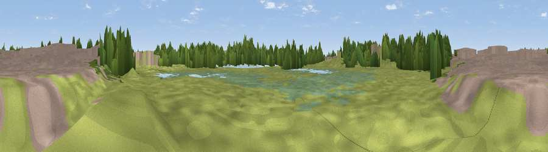

Mound
#45052 in England · top 99% of its area beats it · near Stockton-on-TeesThe view, rendered

A 360° render of this exact spot computed from the terrain model, tree cover and land cover — summer colours, afternoon light, calibrated against photographs of famous viewpoints. Real trees, hedges and buildings will differ in detail.
The panorama
Grey silhouette: terrain skyline in each direction (720 bearings, Earth curvature and refraction included). Dashed green: skyline with trees (+15 m) and buildings (+8 m) as obstacles. Blue strip: how far the ground is visible on each bearing.
Where the view opens
Wedge length = distance to the farthest visible ground on that bearing (vegetation-aware). Rings at 10, 25 and 50 km.
What fills the view
41% grassland · 30% woodland · 13% built-up · 12% wetland · 3% water ·
Angular shares of the visible panorama (visual magnitude), not map area. Landscape diversity 0.61 (0–1 Shannon).
Key numbers
More beautiful places nearby
The staircase of upgrades: each row has a higher view potential than everything closer. Driving times are estimates from straight-line distance, calibrated against real road routing — check an actual route before setting out.
| Place | Direction | Drive | Score |
|---|---|---|---|
| Viewpoint near Stockton-on-Tees | W · 0 km | ~1 min | 25.1 |
| Viewpoint near Stockton-on-Tees | SE · 1 km | ~2 min | 49.3 |
| Viewpoint near Port Clarence | ENE · 6 km | ~12 min | 62.4 |
| Viewpoint near Newton Under Roseberry | ESE · 8 km | ~16 min | 78.3 |
| Viewpoint near Lazenby | ESE · 10 km | ~19 min | 82.1 |
| Viewpoint near Lazenby | E · 10 km | ~20 min | 86.4 |
| Warsett Hill | E · 23 km | ~37 min | 86.8 |
| Viewpoint near Easington | E · 27 km | ~44 min | 90.2 |
54.56981, -1.27914 · source: osm viewpoint · position refined by local search. Computed location — check access rights before visiting.